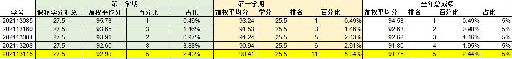
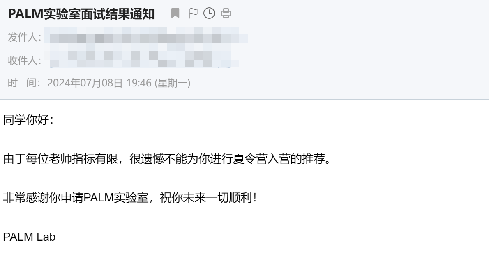
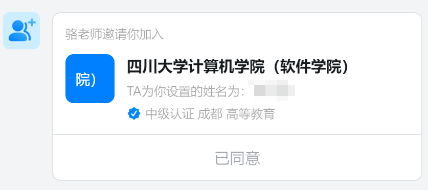
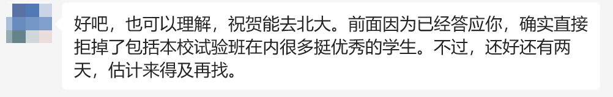

我的保研之路
2024年9月25日，我收到了北大的拟录取通知，当时感觉一切都释然了，仿佛做梦一般，怎么也想不到会是这个结果。接下来就看看这一路走来的颠沛流离吧，以此送给我过去付出的点点滴滴。
1 大一机械转专业
1.1 报志愿
刚上大一的时候还是机械专业，我高考分数是597分，从下面可以看到东秦在我们省机械类专业的最低分数线是596，可以说几乎是压线进来的。当时报考东秦的时候完全是从我报了一个报考辅导机构，然后机构中有一个系统，你输入选课、高考分数和位次之后会自动筛选出一些学校，东秦也就是筛选出来的。我自己在报考之前完全不知道有这个学校。
就是这样，我就在96个志愿中的好像是第11个志愿填上了东北大学秦皇岛分校—机械类专业。记得当时出录取结果的时候，我和父亲在超市里买东西，知道结果后，好像挺开心的当时，一方面是有大学上了，其次是个985（虽然是末9）。
1.2 大一上学期的懵懂
在上大学之前，我就和母亲了解过东秦可以转专业，但是当时也仅仅是了解，而且知道转专业都是学习好的转，不是随便转的。
开学之后，对我的大学生活和大学规划一无所知，其实也不知道自己以后要干什么，要不要转专业，要不要考研。现在想来这也是正常的，因为大部分大一新生还是沉浸在刚脱离高中享受自由的喜悦吧。由于高中还是挺认真的在学习，所以刚上大一的时候还是延续了这种劲头，上课的时候也会认真听，认真完成作业。
但是记得刚开始，上完课就回宿舍，完全没有说会想着自己再去多学点东西。还记得当时很想谈恋爱，对恋爱很憧憬，还和一个女生约了一起去学习，但是现在想来真是尴尬至极（不懂事哈哈哈🤣）。
1.2.1 机器人实验室校内赛
在确定录取结果之后开学之前，控院一个机器人实验室开始招新，其中就有机械组，然后正好是我学的专业，所以就很积极，很想学习机械的一些内容，特别是其中涉及到使用solidworks进行一些3D建模，就很感兴趣，像下面这种。
solidworks这个软件特别大，而且是国外公司开发的，正版软件购买的话好像好几万块钱，所以都是盗版软件，需要激活注册，总之这个软件安装特别费劲的。安装好之后，就开始照着图纸进行建模，当时感觉非常好玩，毕竟3D建模好像对于大部分男生来说都有吸引力。
开学之后这个实验室要进行选拔，有一个校内比赛，所以大一上很多时间都在弄这个校内赛。这个比赛需要组队，一共4个人，我当时和我们专业另一个男生，然后又找了两个大二的学长一起组了队。在备赛的过程中，队伍的学长们都很耐心，没有说我们是大一的然后觉得我们菜（不过当时确实有点菜感觉）。此外，我们有什么不懂的问题问实验室的学长的时候也都很好。
最后在校内赛中，我们获得了第一名，好像有十多只队伍参赛。我当时还发了个说说，现在感觉当时还真是活跃啊哈哈哈，那时候的我还经常发空间的。
我当时比赛操作的视频被我队友录下来了，在B站上传了，如下：
现在想来真是意难平，但是特别多人都在围观，我还是操作手，不过总之还是扛住了压力，哎，真是感慨万分。
1.2.2 参加各种活动
除了上面的比赛之外，我也参加了特别多的部门招新面试和开放活动，其中就包括我和女朋友相遇的那个部门。但是让我记忆尤新的是参加南校一个科创开放日，你能去各个团队进行参观。我在参观一个实验室的时候，其中一个学姐问我是什么专业的（因为不止我们专业的可以去），我说机械，然后她说她也是机械专业，当时感觉很亲切。
了解了之后，她是机械转到计工电子信息的，然后她问我想转专业吗？我说我不知道，听说转专业挺难的。然后她告诉我说，转专业其实不难，大一就认真学习的不多，只要你努力学，肯定可以。其实当时对她说的没有什么感觉，之后她告诉我说机械就业薪资可能比较少之类的，当时其实我没有多动摇，还是想着继续学机械。
但是之后，我上面参加校内赛的那个实验室其中一个大三的学长也给我说了类似的话，表达的意思就是如果有机会可以转专业的话还是转出去吧，好像机械专业前十能转的都转了。那时我就有些动摇了，想着是不是可以考虑转专业。
之后大一上学期就结束了，我的成绩排名是第11，高数考的太低了，这个排名应该处于转专业的边缘。
1.3 大一下学期的拼搏
大一下学期由于疫情，没有开学，从寒假开始，整个开学都是在家里线上教学。很感谢这个学期的自己，真的每个课都认真听，认真完成老师布置的作业，认真做好复习。其实在这个学期自己也经历了一些心理上的历程，当时想转专业的决心达到了极致。
这个学期有C语言教学，然后感觉对计算机很感兴趣，而且计算机的薪资高。所以当时特别特别特别想转专业，但是自己处于边缘，所以只能好好学，好好学，好好学，太不容易了。

最后我的成绩来到了专业第5，转专业已经很稳啦。当时父母也都很开心，能换到一个更好的专业，接下来就是选择转到哪个专业，肯定想去计算机。但是所有转专业的学生有一个C语言的机试，并且当时很多人都想转到计算机专业，所以还是有些担心自己能不能成功转入CS。
最后还是有惊无险吧，成功转入自己想学的专业，当时特别开心吧，通过自己的努力换了一个专业。
2 大二计算机
刚转到计算机的时候，感觉自己太菜了，别人都学了一年了，你这个外来的就会个C语言，而且当时还要补修大一没学的计算机课程。刚转过来之后我的绩点排第13，然后好像那年计科保研的就13或14个人。当时在想，估计保研的希望不大了，因为如果不转专业的话在机械肯定能保研，现在都不一定了。当时其实有做考研的打算。
2.1 实验室考核
刚转过来之后，有计工学院的实验室招新，其中介绍的是研究程序下棋，感觉很有意思，就填了报名表，我还留着，如下：
现在回看这个报名真是感慨万分，内心五味杂真，之后也就收到了面试通知。
当时去面试的时候，看到有很多人也在等待进行面试，反正感觉其他人都好强，自己好菜…面试的过程过去好长时间了，我也忘记了，总之当时也问了一些技术问题，感觉回答的好像还行？自己也不知道什么样，其实就抱着试一试的态度。最后，很幸运的收到了以下通知：
之后就去实验室啦，但是去了发现好像还有一轮考核，给每个人分配一个工位之后，需要在1个月内完成蒙特卡洛树搜索算法的复现，时间太久远了，相关的内容找不到了，那段时间也不会python，所以就从python学起，那段时间也挺拼的吧，仅用2个月就完成了考核任务，而且实验室学长对我也都很认可。
2.2 谈恋爱
谈恋爱其实大一就想谈了，也进行了一些尝试，但是都是后续由于各种各样的原因没有结果了。然后大一下又没有开学，自己也不想网恋，感觉不真实，就没有想这件事。
大二上正好我有一个部门工作，然后那个部门里有来自各个学院的同学，所以能认识到很多人。一开始和一个女生互有好感，但是在互相了解的过程中，发现彼此性格还是不太合适，最后也以失败告终。当时刚结束的时候，还想着自己不想主动找其他女生了，因为刚转专业，也有很多课程要学习。
之后，stella，也就是我现在的女朋友，她主动加了我的好友，我当时就在想这个女生是不是对我有意思，但是经历了前面的失败，有点不太敢尝试了。之后好像是她约我出来打羽毛球🏸，我当时想的是不能辜负女生的好意，于是就想和stella了解一下，看看是不是自己的理想型。在这个过程中，大概了解了快一个月吧，说实话，感觉学习都落下了好多哈哈哈，心思全在她身上了，每天都想她。
中间也发生过一些小插曲，不过最终在一天（我们每次晚上一起自习完之后，都会去西操场去散步），其实那天我挺紧张的，因为我想和她表白，哈哈哈哈。现在想来真是有些羞涩，我真的鼓起了勇气向她说“你愿意做我的女朋友吗”，她说她愿意啊。当时的那种开心和幸福，现在还能感觉的到。梦想成真的感觉，从小到大虽然也和一些女生暧昧过，但是几乎都是偷偷摸摸的，怕被老师和父母发现，就很难受，但是和stella是自由的，不怕被任何人发现。
确认关系的那天晚上，我第一次和她牵了手，当时感觉太羞涩了，毕竟没有经历过，感觉一切都是那么的新奇。然后回宿舍之后，就绑定了QQ的情侣关系，换了情侣头像，stella愿意和我换名侦探柯南的情头（我是一个柯南迷），当时特别开心，现在想来都很开心，可能这种开心只会在当时才能产生吧。

之后就沉浸在男女朋友刚确认关系的新鲜感中，其实当时我们还是有很多需要磨合的地方，这也体现在我们后面出现了大大小小的各种矛盾，不过还好，我们深爱对方最后走到了现在，从2022-11-09确认关系到现在，已经快2年了，这2年经历了很多。不过我们都在因为对方的存在变得越来越好，希望我们可以一直幸福下去~
2.3 成绩
就像上面说得，大二上学期几乎都在谈恋爱了，然后快期末考试的时候，疫情又爆发了（当时还没解封），所以期末考试就取消了，改为下个学期开学的时候进行。我也就因祸得福，因为当时很多都没学完。然后寒假的时候我就努力复习，好像大二上学期的成绩进步到了11名。
然后大二下学期的成绩进步到了第8名，因为下学期没有什么负担和压力让我分心了，就在好好学习，就这样，我挤进了前十。
3 大三保研
3.1 大三上写论文
在大二结束的那个暑假，我没有回家，留在学校参加2023年的计算机博弈比赛，整个暑假也很忙碌。不过那好像是我第一次认真的在写代码和开放文档，所以那段时间现在回想起来也很开心。
之后就是大三上学期开学，由于保研是大四上学期，所以如果要有论文加分的话，必须大三上学期就要写完进行投稿吧。同时大三上学期也开了计组、计网、操作系统和编译原理等很多重要的专业课，所以一整个学期都是很累，特别是最后期末周的时候，几乎每周一个考试，还有好几个课设，现在回想起来还是感觉很累的。
关于写论文详见记录我的第一篇论文，最后这篇论文也是成功投稿并录用了。在大三上学期的期末考试中，我几乎每科都考得很好，成绩如下：
这也导致我的成绩一下子从第8名进步到第6名，真是不容易，要知道，名次越靠前，肯定进步越难，因为大家都是努力学习的，所以我也很佩服自己做到了。
3.2 大三下开始保研
在大三上结束的寒假，其实就已经开始着手准备一些保研相关的事情，包括准备个人陈述、简历等内容。那时候也开始了解可以报名什么学校、什么专业之类的事情。
然后就是下学期开学了，虽然这学期的课程没有什么很重要的，但还是有很多课，而且还是要好好学的吧，因为保研算成绩的时候会用到前六学期的成绩，所以这个学期一边要准备保研的机试、专业课和面试等内容，同时还要认真准备校内的考试。
具体保研的内容下面再介绍，大三下学期的最终成绩如下：
我的排名竟然又进步了，这次我真的没有想到，因为当时第6名我觉得已经很好了，毕竟刚转来的时候才刚排13名，现在已经进步了很多了。这次成绩出来之后，一下子从第6名前进到第4名，不用描述，当时感觉非常开心，因为这样的话保研更稳了，并且报名学校预推免的时候rank更高了。
3.3 保研综测
最后保研的时候要计算综测，综测的计算方法如下：
其中。
我的加权平均学分绩是93.188，排名第4，然后论文的话我有一篇北大中文核心论文学生一作，可以加20分。
比赛的话我有一个五星国一，成员排序也是第一，能加15分。
然后剩下的就是奖学金部分，虽然这部分我可能不是很高的，但是也不至于被别人拉开差距，所以当时在出综测成绩之前，我就想着自己肯定会前进几名，或许到第2、第3名，最后的结果是我真的意想不到的，结果如下：
我是第一！！！天呢，谁会知道是这个结果呢？当时感觉很不容易，应该是太不容易了，刚转专业过来才刚13名，还担心自己能不能成功保研，最后我竟然成为综测第一名，很开心，因为我知道很多学校在预推免的时候会让填综测排名，所以第一的话还是为我保去好学校增加了一丝可能性。
4 夏令营
刚开始投递的时候也不知道自己能去什么学校，只是知道要多投一些。去年我们专业学长学姐保研去的学校中（不考虑专业和导师）最好的是浙江大学，所以当时自己也想试一试华五，其中最想去上交吧。所以在2024-03-31我给上交的老师发了第一封套磁信：

很遗憾的是没有收到老师的回信，当时感觉很失望，怀疑自己是不是水平太低了，现在感觉老师不回真是太正常了。
一个星期后老师还没有回复，于是我又想上交的另一个老师发了套磁信，令人难忘的是，老师竟然回复了，内容如下：
之后我把论文发给老师之后，不知道是不是因为方向不匹配的问题还是其他，老师就没有回复我。过了很久我又给老师发了一封邮件咨询老师，老师回复我说他没有硕士名额，只有博士名额了。
就这样，我的保研之路就此踏上了征程。夏令营一共投递了33个项目，一共只有6个通过初筛，18%的通过率，真让人头疼🤦，不知道是不是rank不够，还是其他原因。接下来分别介绍几个参营的学校经历。

4.1 天大智算
第一个入营的项目就是天大，天大在入营之前有一个线上机试，一共5道题，之后根据这次机试来刷掉大部分人。
很幸运我成功通过了初筛，机试题目见6.23天津大学夏令营初筛机试，入营通知如下：
别提当时有多开心了吧，因为好多项目都被拒绝了，怕自己一个都入不了，最后收到了天大的入营通知，还是很开心的。之后就是参营过程，详见天津大学智算夏令营之旅。
出优秀营员结果的时候，大部分人都被评为了优秀营员，但是只有这个优秀营员是没用的，还需要找一个团队进行上报，这样才能被A+优秀营员，相当于必须得有团队接收你。所以，我就找了一个团队进行考核，考核内容见2024 X-Team夏令营考核。那段时间正好也回家了，所以也没有什么事情，几乎都在搞这个，应该就算是在做科研吧，感觉挺有意思的，成功通过了团队的考核。
当时由于只有这一个offer，所以也说会去，就这样，天大和我的故事就告一段落了。
4.2 电科面试
电科当时也入营了，由于7.1~7.3我在参加天大的夏令营，但是电科的安排是7.3~7.4，所以电科7.3的团队宣讲我就没参加，然后7.3晚上直接坐飞机从天津赶到成都。
这也是我第一次坐飞机，飞机起飞的时候感觉挺震惊的，而且飞机在飞行的过程中还遇到了气流，一直在乱晃。对于没坐过飞机的我来说，当时心跳很快，特别害怕出事故，但是空姐说这属于正常情况，等一会飞到气流稳定的地方就好了，不过当时还是很担心的。
记得到酒店的时候都7.4凌晨了，然后9点还要面试，面试的流程如下：
当时英语问题让我回答我的优点和缺点是什么？哎，当时的我是一点没有准备啊，所以就在瞎掰英语口语，还挺紧张。专业课是自己抽题，我当时的运气真是绝了，直接抽到软件工程，这个真是一点不会。学校上课的时候就一次课没听过，虽然最终的成绩很好，但是只要你认真背老师给的知识点，肯定至少90分以上。所以当时抽到软工相关的题目的时候，内心还是挺慌的，自己回答的时候也是有有点没有逻辑。
电科清水河校园的风景还是挺美的，绿意盎然，但是我面试完就直接回酒店了，因为当时感觉又累又困，之后第二天就坐车回家了。其实也可以在成都玩一玩的，感觉成都好玩的好吃的地方有很多，希望以后有机会去成都旅游。

果不其然，没有被评选上优秀营员，但是正是这次的失利，让我知道自己什么地方是薄弱的，回家之后我就认真准备英语口语和专业课了。
4.3 北工大面试
北工大好像都不是985，为什么报名这个学校呢？是因为自己夏令营的时候确实没有入什么营，这时候也没有天大和西交的offer，所以怕自己没学上，就报了北工大，考虑到在北京，所以想着实在不行就去这里吧，起码实习挺方便的。
但是发生了一个小插曲——我在报名系统中的身份证号填错了，后续面试的时候是通过学信网发布的，由于我的身份证填错，导致一直没有收到面试，后来找相关老师进行解决。最后发现是我的身份证填错了…向北工大老师说声抱歉，那个老师也说了我一顿，我也向她道歉了。
由于这次事故，我之后填系统都仔细检查自己的信息，千万不能再犯这种错误。最后北工大也获得优营，但是后面有了其他offer，这个优营也没管了。
4.4 西交计算机
西交计院计算机入营是在天大之前，由于夏令营是线上进行，并且不发offer，是团队进行考核，所以估计认真做的人很少。我也是做完了天大的团队考核之后，才开始做的西交的考核。
具体考核任务见将LayoutGuidance应用到StableDiffusion，这个任务涉及到文生图相关，之前从来没接触过相关的知识，但是一直想弄明白文生图的原理，所以感觉很有意思，最后也成功通过了考核，通知如下：
另外我报考的这个导师也很好，不push，放实习，毕业要求简单，并且组内补贴也有，实验室算力资源也有，所以当时就想着去西交。
5 预推免
预推免投递情况如下，一共投递了20个学校，只有5个入营了。由于夏令营差不多有了两个offer，所以预推免比这两个学校更次的就没有投递。

5.1 东南大学优营
俗话说得好，保研分为“夏令营→东南大学→预推免”，几乎所有学校会开夏令营和预推免两次招生，但是东南大学只有一次。
东南大学首先需要找导师推荐，之后学院对报名的学生进行初筛，初筛通过的去线下面试。其中Palm实验室很知名，我也是很早的就投递了它们，并且参加了第一批的面试，面试内容如下：
面试的时候也没问我什么很别扭的问题，而且我感觉我回答也还挺好的。但是最后还是没有被选上，只能再找其他老师。

当时还挺失望的吧，我有同专业的同学也参加了Palm实验室的面试，不过是第二批和第三批，他们好像都通过了，不知道是不是因为第一批大佬太多的原因，也可能因为我自己太菜了/(ㄒoㄒ)/~
之后在练习其他老师的过程中，几乎把做深度学习的除了Palm实验室的能找的老师都找了，只有两个老师回复了我。其中A老师让我做自我介绍PPT，然后进行了一次线上交流，当时老师也和我说了很多。之后我问他推荐结果什么时候可以通知我，他说他可能还得再面试几个学生，然后再通知。
我怕他最后通知我不给推荐的时候系统填报就快截止了，那时候肯定来不及联系其他老师了。所以我就又联系了B老师，B老师也让我做自我介绍PPT，然后线上面试，面试完之后B当场就告诉我这个推荐名额可以给我，但是可能要我做一个考核任务：一周内写一个基于脸部视频图像的早期老年痴呆诊断技术综述，写完了发给老师之后，就给我推荐了。
之后成功收到了东南大学的入营通知，如下，当时很开心的，因为可以去南京看一看，一直没去过南京。
东南大学的考核只有一天，严格来说只有20分钟左右，只要你面试完就可以走了，没有报道也没有宣讲和机试，面试考核内容如下：
当天到东南大学之后，感觉seu好大啊，我还拍了好多照片，当时进学校之后，扫了一个共享单车，我是下午的面试，但是我上午很早就过去了，一是想着熟悉一下环境，二是看看学校的风景。


之后就是面试，一开始有个人信息表需要你自己打印带进去，然后发给每一个老师。老师拿到了之后好像就开始填一些信息。之后个人进行PPT自我介绍（5min左右），然后老师提问一两个英文问题，考察你的英语口语能力，在你用英语回答问题的时候，老师就会在下面给你打分。随后面试小组专家考察专业基础知识掌握、科研能力、综合能力及表达交流能力等。提问主要聚焦于你PPT中展示的东西。
而且，老师问我的好几个问题都是基于我对上一个问题的回答来进行提问的，所以东南大学的面试感觉很灵活，不是说一味的提问专业课。当然我有同学被问到了专业课，老师提问专业课一般是根据你介绍的内容中用到了什么知识点，然后老师去提问和这个相关的专业课，不是说随便提问，所以说还是挺灵活的。
中午给发了一个餐券，15块钱，去了餐厅之后就点了菜，如下图，感觉很香😋。

最后也是成功获得了优秀营员，这样又多了一个offer，但是我联系的这个老师的研究方向是医学图像，自己不太想做交叉，所以有点不太想去东南，最后还是把东南的老师给鸽了🕊
5.2 川大面试
川大夏令营投递了计算机学院，但是没有入营，之后预推免又投递了一次，就在一天晚上从图书馆自习结束之后刚要回宿舍，就有一个四川成都的电话📞打过来，当时第一反应就是川大的老师吧。之后老师通知我第二天进行面试，并且在钉钉群上加入组织。

但是现在报名网站上还是未审核，所以应该是钉钉群通知。面试内容是英语文献翻译和专业课回答。英语文献翻译我当时的内容是强化学习，由于之前学习过一些内容，所以还算比较熟悉。
专业课问题的话是先给你看计网、操作系统和数据结构的各三个题目，然后从里面选择两个进行回答。计网问的是UDP，OS问的是Unix中提供的管道通信有哪些，数据结构是哈夫曼编码。我选的是数据结构和计网，感觉回答的也挺一般的，后面也没有后续了。
当时老师问我有没有联系川大的老师，我说没有，可能如果联系老师了的话应该会很容易，但是当时投递川大也就是为了想试一试，并没有真的想去，所以就无所谓了。
5.3 西交面试
在面试之前，由于我夏令营通过了老师的考核，所以老师把我上报给学院了。之后预推免面试的时候感觉几乎就是走流程，我介绍完PPT之后，然后老师问我报考的哪个老师，我说xxx。然后就没有问其他问题了，感觉还是挺水的，有点类似弱com。
最后还是把西交鸽了，不过老师也很好，说他也能理解我，我在收到北大的offer后当天就和老师说了，希望早告诉老师，这样还有时间找其他同学。

还是感觉这位老师，这位老师也很好，我也打听了很多学长，也祝这位老师今后工作顺利。
5.4 北大软微—梦
就像上面讲的，在成为综测第一之前，我也没想过投递软微，因为清北独一档，像我们末九的话，几乎只有rank1有机会，成为第一之后，软微的预推免报名通知才出来。而且还有一点，就是去年我们专业的综测排名好像都等到9月20多号之后才出来，但是今年就很早。
所以我认为这是我的一个机会，我一定要抓住。但是北大的一个习惯就是所有报名材料都要求邮寄过去，应该是所有学校中最麻烦的了。并且还有很多额外的要求，如下：
可以看到要求2封专家推荐信，并且很多材料要求盖章后放入自备信封密封，还要在封口骑缝处加盖学院的章，当时感觉还是挺麻烦的。准备完材料之后就寄顺丰过去了，当天下午6点多寄的，第二天早上8点就到了，很快，这里给顺丰好评。
邮寄的时候我就抱着试试的态度，不知道会不会进入复试。在材料被签收之后，我每天都到北大报名中查看审核状态，有的时候一天都要看好多次，当时真的很想去，而且也加了很多北大软微和其他学院的学长的联系方式，他们都有我有机会。
那段时间真的感觉挺煎熬的，因为当时华五一个都没入，如果软微没有的话，估计就去西交了，其实当时已经打算去西交了，东南的准备放弃。所以那几天每天都是圣软微信徒，在网上搜软微的各种信息，记得晚上睡觉的时候还在假想自己如果最后去了北大软微，父母该有多骄傲啊。
经常听人说去清华北大，但是有几个能去的呢？反正我身边所有亲戚，包括亲戚的亲戚一个都没有，所以当时的我很想去，也不敢想太多，因为怕自己空做白日梦，不敢有很高的期待，怕摔的太惨。
在9月19号下午的时候，软微有其他方向收到了复试通知，当时我紧张坏了，因为自己没有收到软微的复试通知。那天下午一直在刷小红书，看有没有关键软件的人收到了复试通知。但是没有发现一个，所以猜测可能这个方向还没审核完。
到晚上吃饭的时候，还过一会就看一下手机有没有收到邮件，晚上学习的时候其实有些忘了。然后忘了当时为什么要看手机，肯定不是为了看有没有收到邮件，然后就突然看到了下面这封邮件(;´༎ຶД༎ຶ`) ：
别提当时有多开心了吧，虽然复试不代表最终录取，但是起码给了我面试的机会，所以收到复试通知之后，我立马就去打印承诺书，当天晚上就把自我介绍PPT做好了，然后把材料发了过去，效率相当高，生怕第二天自己忘了。
之后就收到了面试通知，如下：
收到面试通知之后就立马订了来回的车票和酒店，当时距离面试还有4天时间，所以那4天一直在准备面试的内容，就在9月23号，我踏上了进京之旅。

从车站到酒店的路上打了一个出租车，师傅人挺热情的，问我是来这上学吗？我说来面试，他说是面试教书吗？然后我说是保研，之后他问我去什么学校，我说北大。当时师傅说北京大学都是尖子生，如果进去了就厉害了，当时我也想去呀。之后也聊了很多，最后下车的时候，师傅给我说让我好好学，指定行，当时突然感觉有了一些信心。
到了酒店之后，上面介绍的川大和西交的面试都是都是9月23号进行的，所以回到酒店之后立马就开始面试了。面完试好像晚上八点了，之后点外面吃了晚饭，第二天早上八点就要去面试。但是当时在酒店一点都不想看了，因为感觉专业课这个真的凭运气，英语口语我也准备差不多了，机试也突击不了，所以就开始玩了。
第二天早上在外面买了早饭吃过之后，就扫了一个共享单车骑车过去，因为我住的酒店离软微不是很远。

当时进去之后，心里就感觉很敬畏这个学校，因为这可是北京大学，多少人梦寐以求的顶尖学府。之后就是开始面试了。首先是手写代码，一共2道题，半个小时。签了协议，所以不能透露题目内容。第一道题还是比较简单吧，感觉没用什么算法知识。第二道是一个滑动窗口，当时昨晚第一道用了20分钟，因为它要求你不止写代码，还要把设计思路和时间复杂度都要写上。所以第一个花了一些时间，然后第二个就写的稍微简略点。
做完两道题之后感觉做的还是挺不错的，可能有些细节有问题，但是整体上算法思想肯定是对的。之后就是面试，我是那一组倒数第2个面试，前面有不少人，当时其实的内心感受是既紧张又不紧张，紧张是因为很想通过这场面试，想好好表现，而且害怕面试问到自己不会的内容；不紧张是因为当时没有什么负担了，能进入复试已经很好了，能和这么好大佬同台竞争我觉得没有什么可后悔的。
感觉当时做的比较好的一点是，前面有面试结束的人，我都会去问他们面试的流程和内容。大体流程就是上来先抽一个专业课进行回答，然后英文介绍第一张PPT（这一点是我之前没想到的，我之前认为是回答英文问题），然后就是针对个人情况进行提问。
当时知道了这个流程之后，我能准备的之后英文介绍第一张PPT，因为这个之前从来没有准备过。所以我就把英文自我介绍改了改，同时也加了一些内容，就把这个背熟之后就到我进去面试了。
进去之后，由于流程我已经清楚了，所以很快就进入状态。抽到的专业课是编译原理，是编译型语言和解释型语言相关的内容，由于我假期复习了，所以答得还算不错。之后PPT介绍啥的我也准备了，所以也很熟练。后面就是问了我一些论文的问题，然后还延伸到GNN，这个我也提前准备了，回答得很好。最后面试结束，我整体的感觉还是非常不错的，感觉有很大机会能选上，但是我也不敢保证，因为你感觉的并不是面试老师感觉的，最后还是要等结果通知。

软微面试结束，其实我的所有保研相关的面试也都结束了，所以当时耳机里放着歌，心里想着这一路走来的颠沛流离，还是深有感触。心想一切都结束了，再也不用复习那个专业课、背英语问题了。我也有西交保底了，软微我也尽力了，剩下的就看天意了。
当天晚上就回到宿舍了，现在仍记忆尤新，那天晚上有些失眠，因为问了学长大概多久会出结果，说是一两天就差不多了。所以一直在想能不能通过软微，同时也在幻想自己如果通过了软微的面试，那该多好啊…
第二天起床后，由于面试什么的都没了，所以就在宿舍玩游戏，然后也忘了软微这件事了。就在我打开手机屏幕的时候，看到来了一封邮件，如下：
我感觉无论用多么华丽、多么朴实的语言都无法描述出我当时的感受，真的是梦想成真的感觉。自己努力了那么久，付出了那么多，你说多吗，好像有比我更努力的，你说不多吗，我为了保研把我能做的努力好像都做了吧。最后，我通过面试了，我通过面试了，我真的通过面试了。
看到这个结果后，刚开的一把游戏也挂机了（对不起匹配到我的队友），我立马和父母打电话，告诉他们我保上北大了，他们一开始也都是不敢相信，因为可能我和他们说过东南有offer，还有西交。总之，他们特别骄傲开心，我也是，我终于让我妈我爸在别人面前骄傲自豪一回。
6 推免系统填报
推免系统开放后一开始的一段时间，我一直查不到保研资格，过了好几天再次打开推免系统的时候，突然就可以查到了。
当时看到自己是计算机科学与技术，专业排名第一，就感觉一切努力、一切付出、一切起早贪黑都值得了，很是开心，因为自己高中的时候当过第一，知道那种感觉，但是上了大学之后好像就没当过第一了，如今我又重新回到了这个位置，感慨万分。之后就开始填各种信息，并缴费。
9月28号开始填志愿，我填了北大软微和天大智算，其实天大是没必要填的，因为软微是稳得，但是一共可以填3个志愿，只填一个心理有点不得劲哈哈哈，还是填上了。
9月29号，开始录取，在等待的过程中可以说是非常焦急，因为看到有很多人都收到了复试通知以及待录取通知，过了半个小时，9:29的时候收到了复试通知，然后马上点了接受。
剩下的就是待录取通知了，不过这时候已经不慌了，因为肯定会给你发录取通知的，只不过时间早晚的事。终于，过了50分钟后，终于收到了那期待已久的待录取通知，当我点击接收之后，那一刻一切就都结束了，保研结束了，我的大学可以说其实也结束了。
上岸pku！！！
感觉从现在开始需要更加努力了，因为已经到了北京大学这个最高水平的平台，周围的人肯定都是top级别的，所以肯定需要更努力才行。从今天开始，大学本科结束，正式进入研0阶段。
 微信
微信 支付宝
支付宝